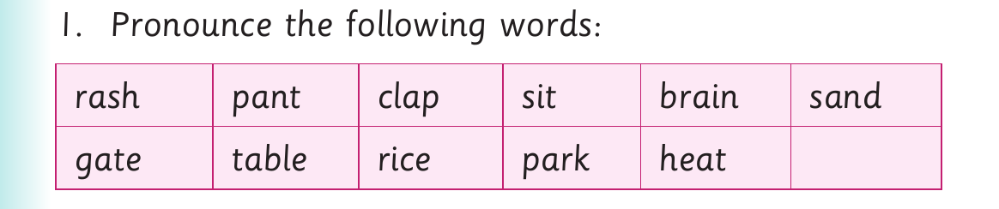

Exact visual panel 1 of 2 from this source page. The page uses visuals as follows: Eight pictures represent words formed after deleting a beginning sound, including a lock, pot, lips, wig, ear and train.
3. Use the words formed in (2) to name the pictures
orally.
(a) (b) (c)
(d) (e) (f)
(g) (h)
Activity 2

Exact visual panel 2 of 2 from this source page. The page uses visuals as follows: Eight pictures represent words formed after deleting a beginning sound, including a lock, pot, lips, wig, ear and train.
1. Pronounce the following words:
rash pant clap sit brain sand
gate table rice park heat